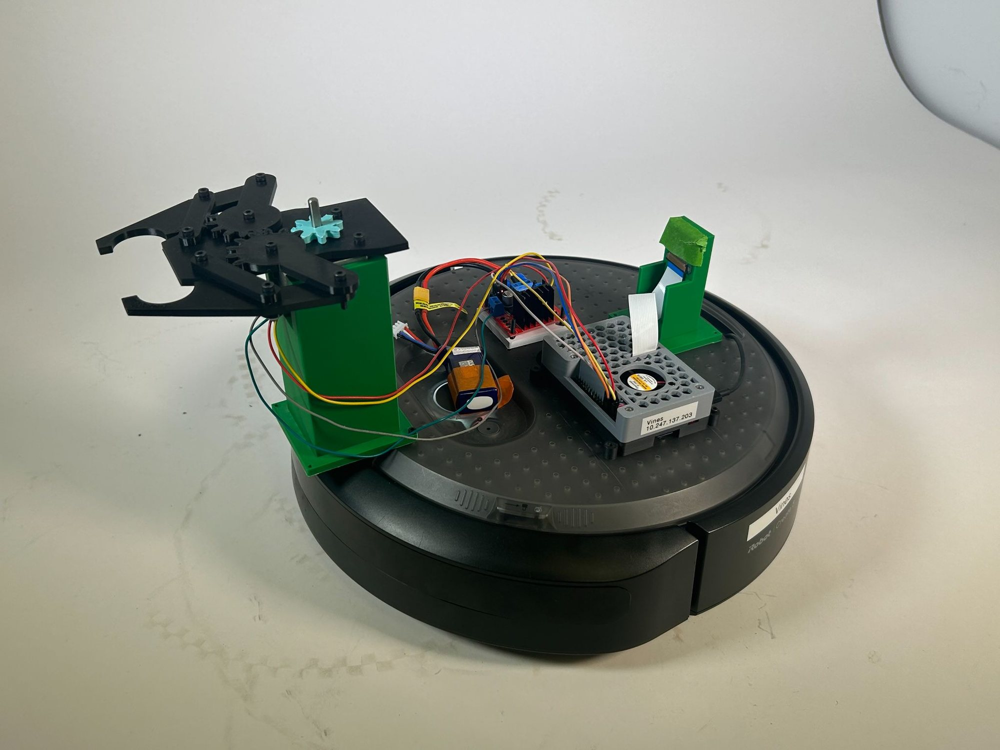
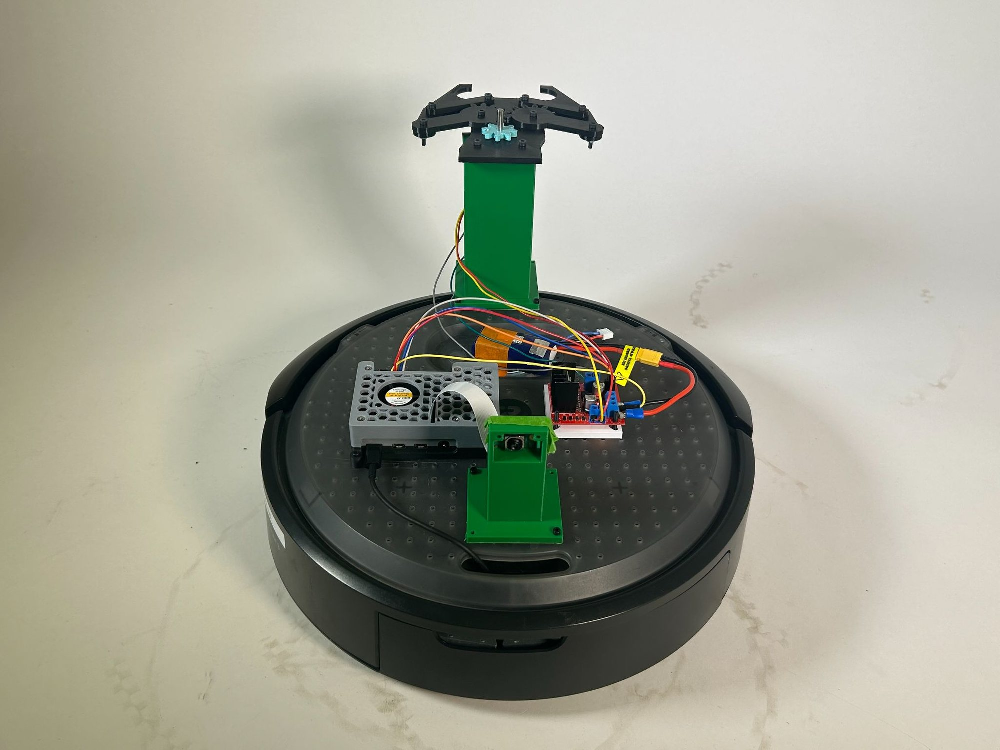
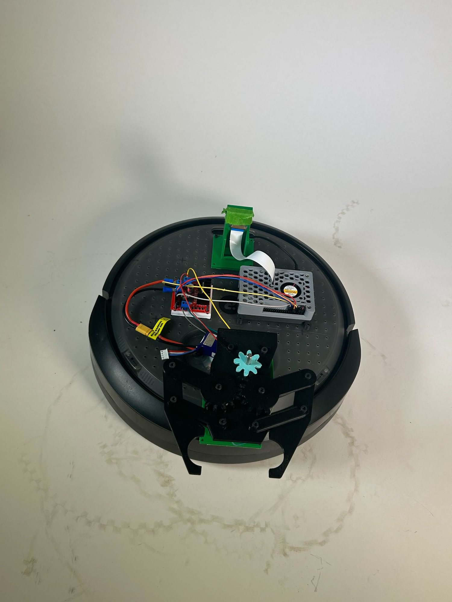
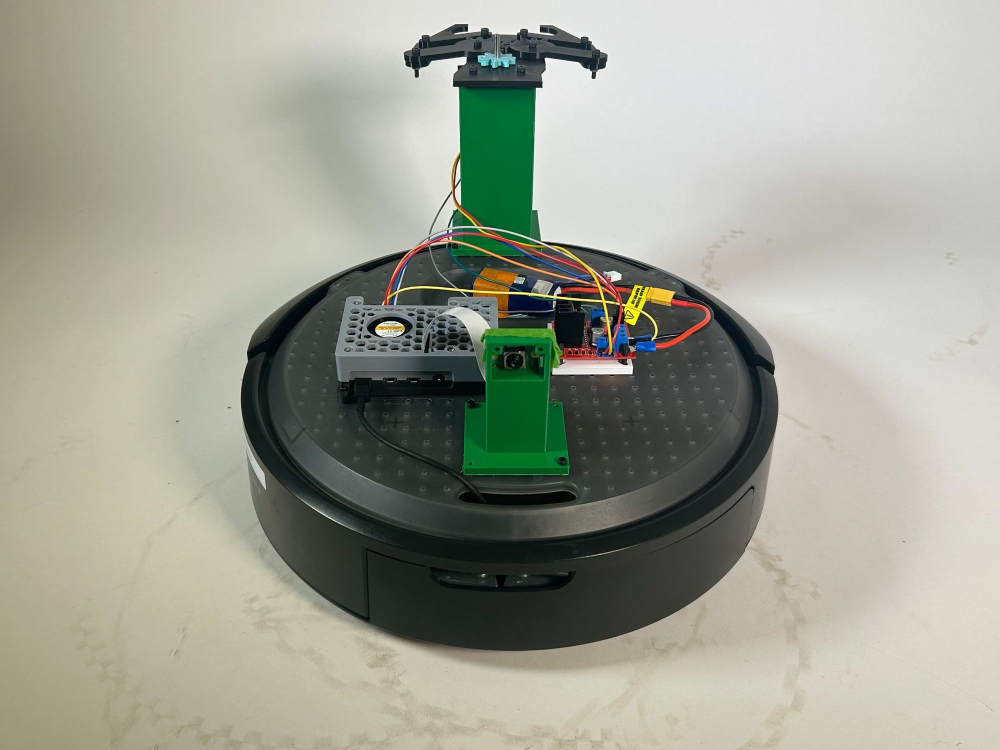
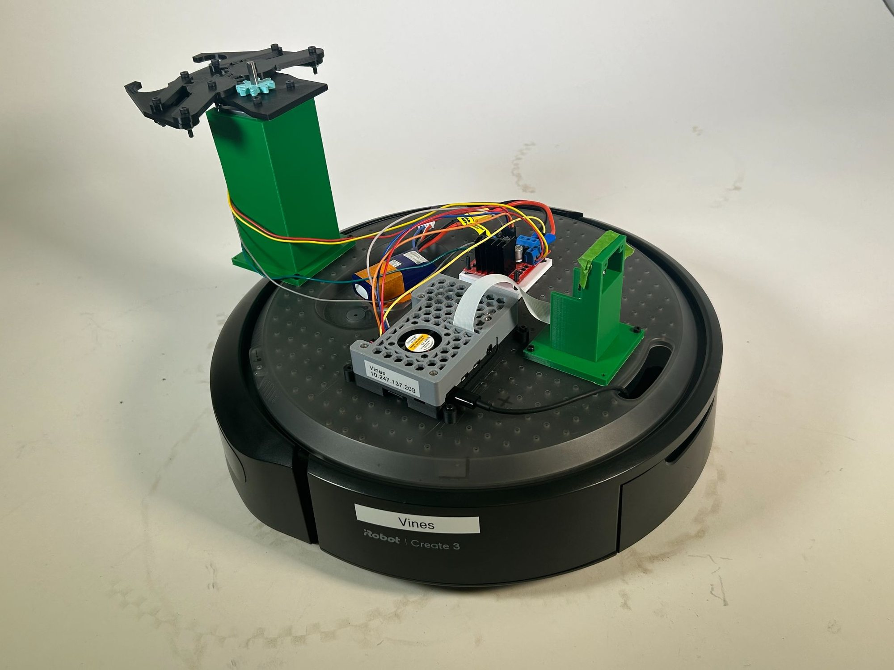

Project analysis
For this project, I built an autonomous system that allows the Create 3 robot to identify and transport Stranger Things characters within a warehouse-style environment. The robot was trained to recognize at least two different characters using onboard perception, then navigate to their predefined locations. Once the robot detected which character was present, it determined the correct drop-off location associated with that character and transported it there without any human intervention. The system was designed to operate under uncertainty: the orientation of the characters was unknown beforehand, and the correct drop-off locations were only revealed shortly before the demo. The robot therefore had to combine navigation, object detection, and decision-making to successfully locate, identify, pick up, and deliver the characters to the correct destinations autonomously.
Create 3 in use
During operation, the robot begins docked and first undocks before starting its navigation sequence. It autonomously travels to predefined pickup locations using a waypoint-based navigation system so that it always moves straight first and then turns, ensuring a consistent final orientation. At each pickup location, the robot performs a scan by rotating 90 degrees, capturing images with an onboard camera, and running a trained neural network model to identify which Stranger Things character is present. After identifying the character, the robot moves to the final pickup position and uses a stepper-motor-controlled gripper to pick up the figure. Based on the detected character, it then navigates to the correct drop-off location and releases the character with the gripper before moving on to the next pickup task, completing the entire process fully autonomously.
How it works
This robot combines ROS 2 navigation, computer vision, and custom hardware to autonomously perform a pick-and-place task using an iRobot Create 3 base. The control program is written in Python with the ROS 2 rclpy framework and uses action interfaces such as NavigateToPosition, Undock, and RotateAngle to move between odometry-based waypoints, ensuring the robot travels in straight segments and maintains consistent orientation before approaching targets. A Raspberry Pi camera mounted on the robot captures images, which are processed with OpenCV and NumPy and classified using a TensorFlow/Keras neural network trained with Teachable Machine to identify Stranger Things characters. The robot also includes a custom 3D-printed gripper assembly mounted on top of the platform, which holds the claw mechanism and supporting structure. This gripper is powered by a stepper motor controlled through Raspberry Pi GPIO pins and an L298N motor driver, allowing the robot to physically grasp and release characters at their designated drop-off locations.
View Python code — full pick-and-place control (ROS 2 + Keras)
'''
Warehouse-style pick and place robot for Stranger Things demo.
Navigates to two pickup locations, detects which character is present,
then delivers them to their assigned dropoff location.
Each pickup and dropoff is approached via a waypoint so the robot
always travels straight then turns, giving a consistent final orientation.
While the robot is idle (waiting for navigation goals to complete), it spins
180 degrees, takes a picture to identify the character, and spins back.
'''
# start with Create3 docked, with the BACK of dock 0.5 m from (0,0), it will turn around when it undocks
# RUN THIS IN TERMINAL BEFORE BEGINNING: ros2 service call /reset_pose irobot_create_msgs/srv/ResetPose "{}"
# if needed (calibrate?): drive him to position: ros2 run teleop_twist_keyboard teleop_twist_keyboard
# if needed (calibrate?): get position: ros2 topic echo /odom --once
import rclpy
from rclpy.action import ActionClient
from rclpy.node import Node
from irobot_create_msgs.action import NavigateToPosition, Undock, Dock
from irobot_create_msgs.action import RotateAngle
from keras.models import load_model
from picamera2 import Picamera2
from libcamera import controls
import cv2
import numpy as np
import RPi.GPIO as GPIO
import time
import math
# Disable scientific notation for clarity
np.set_printoptions(suppress=True)
# ==============================================================
# EDIT THESE ON DEMO DAY
# x — how far forward/backward. More negative = further forward. Less negative = not as far.
# y — how far left/right. More negative = further right. Less negative = not as far right.
# Assign each character to their dropoff location.
# Format: 'character_name': [(waypoint), (final position)]
# Waypoint: go straight to this x first, y=0, facing forward
# Final: then turn and go to the actual dropoff position
# ==============================================================
DROPOFF_LOCATIONS = {
'Dustin': [(-0.9, 0.0, 0.0, 1.0), (-0.9, 0.724, 0.707, 0.707)], # <-- swap with Will if needed
'Will': [(-1.9, 0.0, 0.0, 1.0), (-1.9, 0.742, 0.707, 0.707)], # <-- swap with Dustin if needed
}
# ==============================================================
# Each entry is [(waypoint), (final pickup position)]
# Waypoint: go straight to this x first, y=0, facing forward
# Final: then turn and go to the actual pickup position
# ==============================================================
PICKUP_LOCATIONS = [
[(-0.85, 0.0, 0.0, 1.0), (-0.85, -0.6, -1.0, 0.0), (-0.85, -0.8, -0.707, 0.707)],
[(-1.85, 0.0, 0.0, 1.0), (-1.85, -0.6, -1.0, 0.0), (-1.85, -0.8, -0.707, 0.707)],
]
# ==============================================================
# Stepper motor GPIO pin configuration (L298N motor driver)
# ==============================================================
OUT1 = 12
OUT2 = 11
OUT3 = 13
OUT4 = 15
# Number of steps for one full open/close motion
GRIPPER_STEPS = 120
# Delay between stepper steps (seconds)
STEP_DELAY = 0.01
def _setup_gpio():
"""Configure GPIO pins for the stepper motor driver."""
GPIO.setmode(GPIO.BOARD)
GPIO.setup(OUT1, GPIO.OUT)
GPIO.setup(OUT2, GPIO.OUT)
GPIO.setup(OUT3, GPIO.OUT)
GPIO.setup(OUT4, GPIO.OUT)
GPIO.output(OUT1, GPIO.LOW)
GPIO.output(OUT2, GPIO.LOW)
GPIO.output(OUT3, GPIO.LOW)
GPIO.output(OUT4, GPIO.LOW)
def _step(current_step):
"""Output the correct coil pattern for the given step index (0-3)."""
patterns = [
(GPIO.HIGH, GPIO.LOW, GPIO.HIGH, GPIO.LOW), # step 0
(GPIO.LOW, GPIO.HIGH, GPIO.HIGH, GPIO.LOW), # step 1
(GPIO.LOW, GPIO.HIGH, GPIO.LOW, GPIO.HIGH), # step 2
(GPIO.HIGH, GPIO.LOW, GPIO.LOW, GPIO.HIGH), # step 3
]
p = patterns[current_step]
GPIO.output(OUT1, p[0])
GPIO.output(OUT2, p[1])
GPIO.output(OUT3, p[2])
GPIO.output(OUT4, p[3])
def gripper_close():
"""
Close the gripper by running the stepper motor in reverse for GRIPPER_STEPS steps.
Mirrors gripper_close.py — starts at step 3 and counts down.
"""
_setup_gpio()
try:
current_step = 3 # Reverse direction by starting at step 3
for _ in range(GRIPPER_STEPS):
_step(current_step)
time.sleep(STEP_DELAY)
current_step = 3 if current_step == 0 else current_step - 1
finally:
GPIO.cleanup()
def gripper_open():
"""
Open the gripper by running the stepper motor forward for GRIPPER_STEPS steps.
Mirrors gripper_open.py — starts at step 0 and counts up.
"""
_setup_gpio()
try:
current_step = 0
for _ in range(GRIPPER_STEPS):
_step(current_step)
time.sleep(STEP_DELAY)
current_step = 0 if current_step == 3 else current_step + 1
finally:
GPIO.cleanup()
# Define the class StrangerThingsRobot as a subclass of Node
class StrangerThingsRobot(Node):
# Define a method to initialize the node
def __init__(self):
# Make sure the robot will stop before scanning
self.at_scan_point = False
# Initialize a node named stranger_things_robot
super().__init__('stranger_things_robot')
# Create an action client for undocking
self._undock_client = ActionClient(self, Undock, 'undock')
# Create an action client for docking (used at the end)
self._dock_client = ActionClient(self, Dock, 'dock')
# Create an action client for navigation
self._action_client = ActionClient(self, NavigateToPosition, 'navigate_to_position')
# Create an action client for in-place rotation (used for idle scan)
self._rotate_client = ActionClient(self, RotateAngle, 'rotate_angle')
# Track which pickup we are currently on (0 or 1)
self.current_pickup_index = 0
# Track whether we are navigating to a pickup or a dropoff
self.going_to_pickup = True
# Track whether we are at the waypoint or the final position
self.at_waypoint = False
# Store the current dropoff coords so we can use them after the waypoint
self.current_dropoff_coords = None
# Track the last character detected by the idle scan so the main flow can use it
self.last_detected_character = None
# Load the Teachable Machine model and labels once at startup
self.model = load_model('keras_model.h5', compile=False)
self.class_names = open('labels.txt', 'r').readlines()
self.get_logger().info('Model loaded successfully!')
# Set up the picamera and leave it running for the whole session
self.picam2 = Picamera2()
self.picam2.set_controls({'AfMode': controls.AfModeEnum.Continuous})
self.picam2.start()
time.sleep(1) # give the camera time to warm up
self.get_logger().info('Camera ready!')
self.get_logger().info('Stranger Things Robot initialized. Undocking...')
# Kick off the sequence by undocking first
self.undock()
# ------------------------------------------------------------------
# UNDOCK
# ------------------------------------------------------------------
def undock(self):
goal_msg = Undock.Goal()
self._undock_client.wait_for_server()
self._send_goal_future = self._undock_client.send_goal_async(
goal_msg, feedback_callback=self.undock_feedback_callback)
self._send_goal_future.add_done_callback(self.undock_goal_response_callback)
def undock_goal_response_callback(self, future):
goal_handle = future.result()
if not goal_handle.accepted:
self.get_logger().info('Undock goal rejected :(')
return
self.get_logger().info('Undock goal accepted :)')
self._get_result_future = goal_handle.get_result_async()
self._get_result_future.add_done_callback(self.undock_result_callback)
def undock_result_callback(self, future):
result = future.result().result
self.get_logger().info(f'Undock result: {result}')
self.get_logger().info('Undocking complete! Starting navigation sequence...')
self.send_next_goal()
def undock_feedback_callback(self, feedback_msg):
feedback = feedback_msg.feedback
self.get_logger().info(f'Undock feedback: {feedback}')
# ------------------------------------------------------------------
# IDLE SCAN — spin 180°, capture + classify, spin back 180°
# ------------------------------------------------------------------
def idle_scan(self, on_complete):
self._idle_scan_callback = on_complete
self.get_logger().info('Idle scan: rotating -90° to face character...')
self._send_rotate(-math.pi / 2, self._idle_scan_after_first_rotate)
def _idle_scan_after_first_rotate(self):
self.get_logger().info('Idle scan: capturing image...')
character = self.detect_character()
self.last_detected_character = character
self.get_logger().info(f'Idle scan: detected {character}. Rotating back...')
self._send_rotate(math.pi / 2, self._idle_scan_after_second_rotate)
def _idle_scan_after_second_rotate(self):
"""Called after the return 180° rotation — resume normal operation."""
self.get_logger().info('Idle scan complete. Resuming...')
self._idle_scan_callback()
def _send_rotate(self, angle_radians, on_complete):
"""Send a RotateAngle goal. Calls on_complete() when done."""
self._rotate_on_complete = on_complete
goal_msg = RotateAngle.Goal()
goal_msg.angle = angle_radians
goal_msg.max_rotation_speed = 0.5 # rad/s — slow enough to be safe
self._rotate_client.wait_for_server()
future = self._rotate_client.send_goal_async(goal_msg)
future.add_done_callback(self._rotate_goal_response_callback)
def _rotate_goal_response_callback(self, future):
goal_handle = future.result()
if not goal_handle.accepted:
self.get_logger().info('Rotate goal rejected!')
return
result_future = goal_handle.get_result_async()
result_future.add_done_callback(self._rotate_result_callback)
def _rotate_result_callback(self, future):
self.get_logger().info('Rotation complete.')
self._rotate_on_complete()
# ------------------------------------------------------------------
# MAIN NAVIGATION SEQUENCE
# ------------------------------------------------------------------
def send_next_goal(self):
"""Decide where to go next and send the navigation goal."""
# If we have visited all pickups, return to dock
if self.current_pickup_index >= len(PICKUP_LOCATIONS):
self.celebrate()
return
if self.going_to_pickup:
waypoint, scan_point, final = PICKUP_LOCATIONS[self.current_pickup_index]
if not self.at_waypoint:
# Step 1: go straight to the approach waypoint
self.get_logger().info(
f'Heading to pickup {self.current_pickup_index + 1} waypoint at ({waypoint[0]}, {waypoint[1]})')
self.at_waypoint = True
self.send_goal(*waypoint)
elif not self.at_scan_point:
# Step 2: move to scan position
self.get_logger().info(
f'At waypoint, moving to scan position at ({scan_point[0]}, {scan_point[1]})')
self.at_scan_point = True
self.send_goal(*scan_point)
else:
# Step 4: after scan, go to final pickup position
self.get_logger().info(
f'Scan done, moving to final pickup at ({final[0]}, {final[1]})')
self.at_waypoint = False
self.at_scan_point = False
self.send_goal(*final)
else:
if not self.at_waypoint:
# Use the character already detected during the idle scan if available,
# otherwise run a fresh detection now.
if self.last_detected_character is not None:
character = self.last_detected_character
self.last_detected_character = None
self.get_logger().info(f'Using idle-scan result: {character}')
else:
character = self.detect_character()
waypoint, final = DROPOFF_LOCATIONS[character]
self.current_dropoff_coords = final
self.get_logger().info(
f'Character: {character}. Heading to dropoff waypoint at ({waypoint[0]}, {waypoint[1]})')
self.at_waypoint = True
self.send_goal(*waypoint)
else:
# Step 2: go to the final dropoff position
final = self.current_dropoff_coords
self.get_logger().info(
f'Arrived at waypoint, turning to final dropoff at ({final[0]}, {final[1]})')
self.at_waypoint = False
self.send_goal(*final)
def send_goal(self, x, y, oz, ow):
"""Send a NavigateToPosition goal."""
goal_msg = NavigateToPosition.Goal()
goal_msg.goal_pose.header.frame_id = 'odom'
goal_msg.goal_pose.pose.position.x = x
goal_msg.goal_pose.pose.position.y = y
goal_msg.goal_pose.pose.position.z = 0.0
goal_msg.goal_pose.pose.orientation.x = 0.0
goal_msg.goal_pose.pose.orientation.y = 0.0
goal_msg.goal_pose.pose.orientation.z = oz
goal_msg.goal_pose.pose.orientation.w = ow
goal_msg.achieve_goal_heading = True
self._action_client.wait_for_server()
self._send_goal_future = self._action_client.send_goal_async(
goal_msg, feedback_callback=self.feedback_callback)
self._send_goal_future.add_done_callback(self.goal_response_callback)
def goal_response_callback(self, future):
goal_handle = future.result()
if not goal_handle.accepted:
self.get_logger().info('Goal rejected :(')
return
self.get_logger().info('Goal accepted :)')
self._get_result_future = goal_handle.get_result_async()
self._get_result_future.add_done_callback(self.get_result_callback)
def get_result_callback(self, future):
result = future.result().result
self.get_logger().info(f'Navigation result: {result}')
if self.going_to_pickup and not self.at_waypoint:
# Just arrived at the final pickup position — grab the character.
self.pick_up()
self.going_to_pickup = False
self.send_next_goal()
elif not self.going_to_pickup and not self.at_waypoint:
self.put_down()
self.get_logger().info(
f'Dropoff complete for pickup {self.current_pickup_index + 1}!')
self.current_pickup_index += 1
self.going_to_pickup = True
self.at_waypoint = False # already False here, but explicit is safer
self.at_scan_point = False # <-- add this line
self.send_next_goal()
else:
# Just arrived at a waypoint or scan point.
if self.going_to_pickup and self.at_scan_point:
# At the scan position — scan before final approach
self.get_logger().info('At scan point — scanning before final approach...')
self.idle_scan(self._after_idle_scan_at_pickup)
else:
self.send_next_goal()
def _after_idle_scan_at_pickup(self):
"""Scan complete — proceed to final pickup position."""
self.send_next_goal()
def feedback_callback(self, feedback_msg):
feedback = feedback_msg.feedback
self.get_logger().info(f'Remaining distance: {feedback.remaining_travel_distance}')
# ------------------------------------------------------------------
# CHARACTER DETECTION
# ------------------------------------------------------------------
def detect_character(self):
"""
Take 10 frames with the picamera, run the Teachable Machine model on
each, average the confidence scores, and return the top character name.
"""
self.get_logger().info('Detecting character...')
scores = {name.strip()[2:]: 0.0 for name in self.class_names}
num_frames = 10
for _ in range(num_frames):
frame = self.picam2.capture_array()
frame = cv2.cvtColor(frame, cv2.COLOR_RGBA2RGB)
frame = cv2.resize(frame, (224, 224), interpolation=cv2.INTER_AREA)
image = np.asarray(frame, dtype=np.float32).reshape(1, 224, 224, 3)
image = (image / 127.5) - 1
prediction = self.model.predict(image, verbose=0)
for j, name in enumerate(self.class_names):
scores[name.strip()[2:]] += prediction[0][j]
character = max(scores, key=scores.get)
confidence = scores[character] / num_frames * 100
self.get_logger().info(f'Detected: {character} ({confidence:.1f}% confidence)')
return character
# ------------------------------------------------------------------
# GRIPPER CONTROL (real stepper motor)
# ------------------------------------------------------------------
def pick_up(self):
"""Close the gripper to grab the character."""
self.get_logger().info('Picking up character — closing gripper...')
gripper_close()
self.get_logger().info('Gripper closed.')
def put_down(self):
"""Open the gripper to release the character."""
self.get_logger().info('Putting down character — opening gripper...')
gripper_open()
self.get_logger().info('Gripper opened.')
# ------------------------------------------------------------------
# CELEBRATE + DOCK
# ------------------------------------------------------------------
# def celebrate(self):
# """All characters delivered — return to dock."""
# self.get_logger().info('All characters delivered! Returning to dock...')
# self._dock_client.wait_for_server()
# goal_msg = Dock.Goal()
# future = self._dock_client.send_goal_async(goal_msg)
# future.add_done_callback(self._dock_goal_response_callback)
# def _dock_goal_response_callback(self, future):
# goal_handle = future.result()
# if not goal_handle.accepted:
# self.get_logger().info('Dock goal rejected!')
# rclpy.shutdown()
# return
# self.get_logger().info('Docking...')
# result_future = goal_handle.get_result_async()
# result_future.add_done_callback(self._dock_result_callback)
# def _dock_result_callback(self, future):
# self.get_logger().info('Docked successfully! Task complete.')
# rclpy.shutdown()
def main(args=None):
# Initialize the rclpy library
rclpy.init(args=args)
# Create an instance of the StrangerThingsRobot class
robot = StrangerThingsRobot()
# Spin the node to activate callbacks
rclpy.spin(robot)
if __name__ == '__main__':
main()Reflection
Overall, this was a fairly successful project and allowed us to gain practical experience integrating multiple robotics technologies into a single system. Throughout the process we learned how to use ROS 2 for robot navigation, how to control hardware components such as motors through GPIO, and how computer vision and machine learning can be applied to real robotic tasks. In particular, the project introduced us to training and deploying a simple machine learning model for object recognition, which was a new concept for our team. If we had more time and the knowledge we gained after completing the project, we would approach some aspects differently. For example, we trained the character recognition model in a different room from where the final demo took place, which caused some recognition inconsistencies due to differences in lighting and environment; retraining the model directly in the demonstration space would likely improve accuracy. The navigation system itself worked quite precisely, but the small gripper limited the reliability of the pickup process, preventing a perfect success rate. Designing a larger gripper with wider claws would likely improve grasp stability and make the robot more consistent when picking up the characters.
Gallery




